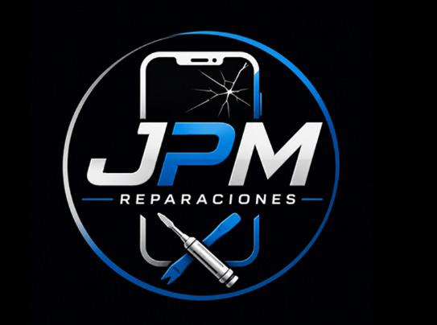
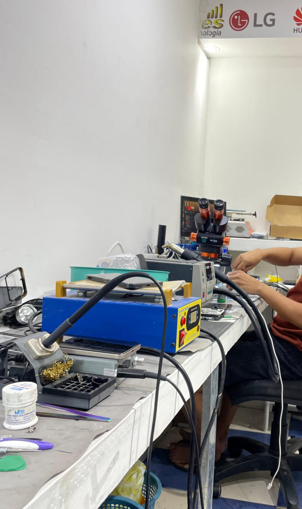
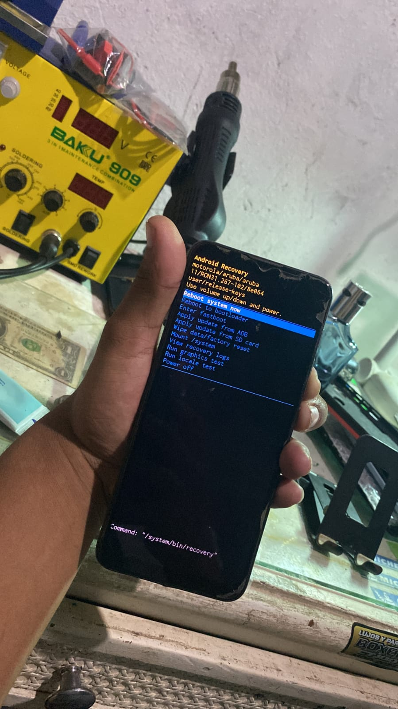
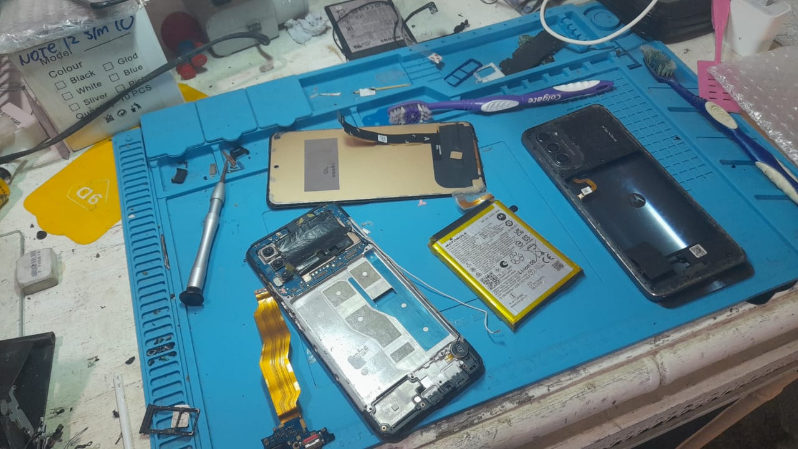

Especialistas en reparación de celulares Android y iPhone. Ofrecemos cambio de pantallas, reparación de software, mantenimiento, recuperación de sistemas y soluciones técnicas con atención rápida y profesional


